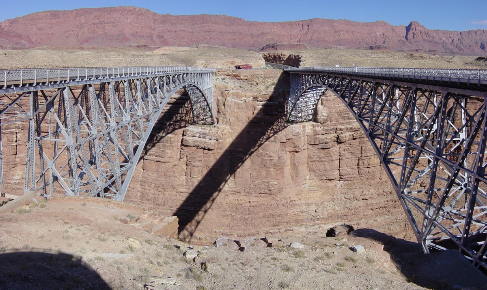

旗杆镇 (Flagstaff) 下午 17:51 日落。16:00 从大峡谷出发，17:30 左右到酒店，全程不摸黑。卡梅伦贸易站在纳瓦霍保留地内（实行夏令时），手机时间可能跳快 1 小时，今天一律按亚利桑那时间。
当日深度分时段行程与图文百科
佩吉出发 ➔ 【可选】纳瓦霍桥 (Navajo Bridge) ➔ 卡梅伦贸易站午餐

⏰ 从容出发：在佩吉凯悦享用热早餐后于 08:30 退房出发，沿 89 号公路/US-89 南下。
✨【可选】纳瓦霍桥 (Navajo Bridge) (09:15 - 09:35)：在 苦泉/Bitter Springs 路口转入 US-89A，西行约 14 英里抵达。在平坦的桥头观景台眺望大理石峡谷与科罗拉多河，稍作拉伸（免费，往返多花约 40 分钟；若感疲劳可直接沿 US-89 南下，或晚 40 分钟出发）。
🍽️ 卡梅伦印第安贸易站 (Cameron Trading Post) (10:50 - 11:50)：大峡谷东门前的百年印第安手工艺品站，在这里享用午餐、使用洗手间并休息（免费，无需门票/预约）。
地标百科：纳瓦霍桥与珍稀加州神鹰 (点击展开)
🦅 加州神鹰 (California Condor)：纳瓦霍桥高悬于科罗拉多河上方 142 米，桥架钢梁是极度濒危动物——加州神鹰（北美最大陆禽，双翼展开达 3 米）常年栖息筑巢的场所。站在桥头人行道上，经常能抬头看到编号神鹰在峡谷气流中翱翔。
科罗拉多大峡谷国家公园 (Grand Canyon) 深度车游
🏰 沙漠景观瞭望塔 (Desert View Watchtower) (12:30 - 13:15)：东门驶入首站。近距离平视大峡谷地平线与历史石头塔楼，下车走 50 米平路即达。
✨【可选】利潘角观景点 (Lipan Point) (13:30 - 13:45)：位于东门至南缘村庄的景观公路 AZ-64 旁。停车场紧邻观景台（步行仅 20 米平路），俯瞰科罗拉多河大转弯（年票免费）。
🦅 麦色观景点 (Mather Point) (14:30 - 15:00)：南缘核心观景台，全平坦无障碍铺装路面，步行仅需 3~5 分钟，低体能消耗地观赏深邃的断崖风光。
🪨 亚瓦派地质博物馆 (Yavapai Geology Museum) (15:00 - 15:45)：位于麦色观景点旁，步行 5 分钟即达。全室内大窗，可避风观看大峡谷地质断层与 3D 立体沙盘（凭年票免费）。也可改为南门外图萨扬镇的大峡谷 IMAX 电影（约 34 分钟，$10-15/人），二选一；选 IMAX 的话到旗杆镇会接近天黑。
地质百科：大峡谷 20 亿年地球年轮与沙漠塔历史 (点击展开)
🌍 20 亿年的地球切片：大峡谷全长 446 公里，最深处达 1800 米。谷底露出的黑褐色片岩形成于 20 亿年前的元古代，几乎代表了地球近半的演化史，被地质学家誉为“活的教科书”。
🏰 沙漠塔建筑：建于 1932 年的沙漠景观塔由著名女建筑师玛丽·科尔特 (Mary Colter) 设计，外观严格模仿美洲原住民古印第安普韦布洛石头瞭望塔，内部绘有精美的霍皮族 (Hopi) 图腾壁画。
驱车前往旗杆镇 ➔ 入住旗杆镇凯悦嘉轩酒店
🚗 林区驾驶与出发时间：16:00 准时驶出公园南门，沿 AZ-64 与 US-180 驱车 1.5 小时前往旗杆镇。当天 17:51 日落，黄昏时林区大角鹿（Elk）经常横穿马路，请控制车速在 45-55 mph 以下，全车保持留意，17:30 左右抵达 旗杆镇凯悦嘉轩酒店 (Hyatt Place Flagstaff)。
🛒 全食超市晚餐：入住安顿后，可前往隔壁的全食超市 (Whole Foods Market) 采购新鲜水果、热食与晚餐。
- 黄昏防大角鹿横穿 (Wildlife Crossing) 与出发时间：当天 17:51 日落，16:00 从大峡谷出发，日落前到酒店。驶往旗杆镇的 US-180 高原林区公路常有成群大角鹿与骡鹿横穿，请保持车距、控速在 45-55 mph 慢行，副驾驶协助观察路肩反光。
- 悬崖拍照安全：大峡谷南缘许多边缘无铁围栏且有松散碎石，拍照时严禁跨越警戒线，严禁在边缘后退盲退取景！